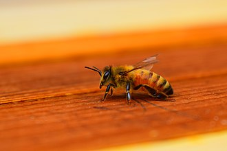

From Wikipedia, the free encyclopedia
For other uses, see Honey bee (disambiguation)
A honey bee (also spelled honeybee) is a eusocial flying insect within the genus Apis of the bee clade, all native to Afro-Eurasia.[1][2] After bees spread naturally throughout Africa and Eurasia, humans became responsible for the current cosmopolitan distribution of honey bees, introducing multiple subspecies into South America (early 16th century), North America (early 17th century), and Australia (early 19th century).[1]
Honey bees are known for their construction of perennial colonial nests from wax, the large size of their colonies, and surplus production and storage of honey, distinguishing their hives as a prized foraging target of many animals, including honey badgers, bears and human hunter-gatherers. Only eight surviving species of honey bee are recognized, with a total of 43 subspecies, though historically 7 to 11 species are recognized. Honey bees represent only a small fraction of the roughly 20,000 known species of bees.
The best known honey bee is the western honey bee, (Apis mellifera), which was domesticated for honey production and crop pollination. The only other domesticated bee is the eastern honey bee (Apis cerana), which occurs in South, Southeast, and East Asia. Only members of the genus Apis are true honey bees,[3] but some other types of bees produce and store honey, and have been kept by humans for that purpose, including the stingless bees belonging to the genus Melipona and the Indian stingless or dammar bee Tetragonula iridipennis. Modern humans also use beeswax in making candles, soap, lip balms and various cosmetics, as a lubricant and in mould-making using the lost was process.